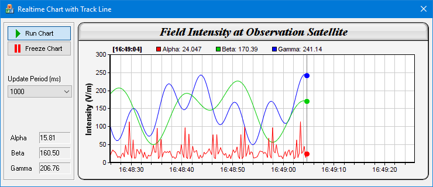

This sample program demonstrates a real-time chart with configurable chart update rate. It includes a track cursor that updates the legend to display the data values as the mouse cursor moves over the chart. When the mouse is not over the chart, the track cursor will display the latest data values in the legend.
In this sample program, new values are generated by a random number generator driven by a timer. The values are initially appended to data arrays which are used for creating the chart. When the number of values exceeds the array size, new values will be "shifted" into the array.
The chart is updated by a second timer. This allows the chart update rate to be configurable independent of the data rate. Also, the chart can be "frozen" for easy reading, while the data can continue to update on the background.
To demonstrate the code structure for update rate control (even though for the update rate in this demo it is not necessary to have any rate control), instead of directly updating the chart, the chart update timer calls
CChartViewer.updateViewPort to trigger the
CVN_ViewPortChanged message, and the chart is updated in its handler.
The track cursor drawing code is essentially the same as that in
Track Line with Legend (MFC). Please refer to that example for the explanation of the code.
[MFC version] mfcdemo/RealTimeTrackDlg.cpp
// RealTimeTrackDlg.cpp : implementation file
//
#include "stdafx.h"
#include "resource.h"
#include "RealTimeTrackDlg.h"
#include <math.h>
#include <vector>
#include <sstream>
#ifdef _DEBUG
#define new DEBUG_NEW
#endif
static const int DataRateTimer = 1;
static const int ChartUpdateTimer = 2;
// 250ms per data point, chart contains 1 min of data = 240 data points.
static const int DataInterval = 250;
static const int sampleSize = 240;
//
// Constructor
//
CRealTimeTrackDlg::CRealTimeTrackDlg(CWnd* pParent /*=NULL*/)
: CDialog(IDD_REALTIMETRACK, pParent)
{
}
//
// Destructor
//
CRealTimeTrackDlg::~CRealTimeTrackDlg()
{
delete m_ChartViewer.getChart();
}
void CRealTimeTrackDlg::DoDataExchange(CDataExchange* pDX)
{
CDialog::DoDataExchange(pDX);
DDX_Control(pDX, IDC_GammaValue, m_ValueC);
DDX_Control(pDX, IDC_BetaValue, m_ValueB);
DDX_Control(pDX, IDC_AlphaValue, m_ValueA);
DDX_Control(pDX, IDC_ChartViewer, m_ChartViewer);
DDX_Control(pDX, IDC_RunPB, m_RunPB);
DDX_Control(pDX, IDC_UpdatePeriod, m_UpdatePeriod);
}
BEGIN_MESSAGE_MAP(CRealTimeTrackDlg, CDialog)
ON_WM_TIMER()
ON_BN_CLICKED(IDC_RunPB, OnRunPB)
ON_BN_CLICKED(IDC_FreezePB, OnFreezePB)
ON_CBN_SELCHANGE(IDC_UpdatePeriod, OnSelchangeUpdatePeriod)
ON_CONTROL(CVN_ViewPortChanged, IDC_ChartViewer, OnViewPortChanged)
ON_CONTROL(CVN_MouseMovePlotArea, IDC_ChartViewer, OnMouseMovePlotArea)
END_MESSAGE_MAP()
//
// Initialization
//
BOOL CRealTimeTrackDlg::OnInitDialog()
{
CDialog::OnInitDialog();
//
// Initialize member variables
//
// Allocate memory for the data series and initialize to Chart::NoValue
m_timeStamps.resize(sampleSize, Chart::NoValue);
m_dataSeriesA.resize(sampleSize, Chart::NoValue);
m_dataSeriesB.resize(sampleSize, Chart::NoValue);
m_dataSeriesC.resize(sampleSize, Chart::NoValue);
// Index position to add realtime data
m_currentIndex = 0;
// Default background color
m_extBgColor = getDefaultBgColor();
// Set m_nextDataTime to the current time. It is used by the real time random number
// generator so it knows what timestamp should be used for the next data point.
SYSTEMTIME st;
GetLocalTime(&st);
m_nextDataTime = Chart::chartTime(st.wYear, st.wMonth, st.wDay, st.wHour, st.wMinute,
st.wSecond) + st.wMilliseconds / 1000.0;
//
// Initialize controls
//
// Set up the data acquisition mechanism. In this demo, we just use a timer to get a
// sample every 250ms.
SetTimer(DataRateTimer, DataInterval, 0);
// The chart update rate (in ms)
m_UpdatePeriod.SelectString(0, _T("250"));
// Load icons for the Run/Freeze buttons
loadButtonIcon(IDC_RunPB, IDI_RunPB, 100, 20);
loadButtonIcon(IDC_FreezePB, IDI_FreezePB, 100, 20);
// Initially set the Run mode
m_RunPB.SetCheck(1);
OnRunPB();
return TRUE;
}
//
// User clicks on the Run pushbutton
//
void CRealTimeTrackDlg::OnRunPB()
{
// Enable chart update timer
CString s;
m_UpdatePeriod.GetLBText(m_UpdatePeriod.GetCurSel(), s);
SetTimer(ChartUpdateTimer, _tcstol(s, 0, 0), 0);
}
//
// User clicks on the Freeze pushbutton
//
void CRealTimeTrackDlg::OnFreezePB()
{
// Disable chart update timer
KillTimer(ChartUpdateTimer);
}
//
// Handles timer events
//
void CRealTimeTrackDlg::OnTimer(UINT_PTR nIDEvent)
{
switch (nIDEvent)
{
case DataRateTimer:
// Is data acquisition timer - get a new data sample
getData();
break;
case ChartUpdateTimer:
// Is chart update timer - request chart update
m_ChartViewer.updateViewPort(true, false);
break;
}
CDialog::OnTimer(nIDEvent);
}
//
// View port changed event
//
void CRealTimeTrackDlg::OnViewPortChanged()
{
drawChart(&m_ChartViewer);
}
//
// User changes the chart update period
//
void CRealTimeTrackDlg::OnSelchangeUpdatePeriod()
{
if (m_RunPB.GetCheck())
{
// Call freeze then run to use the new chart update period
OnFreezePB();
OnRunPB();
}
}
//
// Draw track cursor when mouse is moving over plotarea
//
void CRealTimeTrackDlg::OnMouseMovePlotArea()
{
trackLineLegend((XYChart *)m_ChartViewer.getChart(), m_ChartViewer.getPlotAreaMouseX());
m_ChartViewer.updateDisplay();
}
//
// A utility to shift a new data value into a data array
//
static void shiftData(double *data, int len, double newValue)
{
memmove(data, data + 1, sizeof(*data) * (len - 1));
data[len - 1] = newValue;
}
//
// The data acquisition routine. In this demo, this is invoked every 250ms.
//
void CRealTimeTrackDlg::getData()
{
// The current time in millisecond resolution
SYSTEMTIME st;
GetLocalTime(&st);
double now = Chart::chartTime(st.wYear, st.wMonth, st.wDay, st.wHour, st.wMinute,
st.wSecond) + st.wMilliseconds / 1000.0;
// This is our formula for the random number generator
do
{
// Get a data sample
double p = m_nextDataTime * 4;
double dataA = 20 + cos(p * 129241) * 10 + 1 / (cos(p) * cos(p) + 0.01);
double dataB = 150 + 100 * sin(p / 27.7) * sin(p / 10.1);
double dataC = 150 + 100 * cos(p / 6.7) * cos(p / 11.9);
// After obtaining the new values, we need to update the data arrays.
if (m_currentIndex < sampleSize)
{
// Store the new values in the current index position, and increment the index.
m_dataSeriesA[m_currentIndex] = dataA;
m_dataSeriesB[m_currentIndex] = dataB;
m_dataSeriesC[m_currentIndex] = dataC;
m_timeStamps[m_currentIndex] = m_nextDataTime;
++m_currentIndex;
}
else
{
// The data arrays are full. Shift the arrays and store the values at the end.
shiftData(&m_dataSeriesA[0], (int)m_dataSeriesA.size(), dataA);
shiftData(&m_dataSeriesB[0], (int)m_dataSeriesB.size(), dataB);
shiftData(&m_dataSeriesC[0], (int)m_dataSeriesC.size(), dataC);
shiftData(&m_timeStamps[0], (int)m_timeStamps.size(), m_nextDataTime);
}
m_nextDataTime += DataInterval / 1000.0;
}
while (m_nextDataTime < now);
//
// We provide some visual feedback to the latest numbers generated, so you can see the
// data being generated.
//
char buffer[1024];
sprintf_s(buffer, sizeof(buffer), "%.2f", m_dataSeriesA[m_currentIndex - 1]);
m_ValueA.SetWindowText(CString(buffer));
sprintf_s(buffer, sizeof(buffer), "%.2f", m_dataSeriesB[m_currentIndex - 1]);
m_ValueB.SetWindowText(CString(buffer));
sprintf_s(buffer, sizeof(buffer), "%.2f", m_dataSeriesC[m_currentIndex - 1]);
m_ValueC.SetWindowText(CString(buffer));
}
//
// Draw the chart and display it in the given viewer
//
void CRealTimeTrackDlg::drawChart(CChartViewer *viewer)
{
// Create an XYChart object 600 x 270 pixels in size, with light grey (f4f4f4)
// background, black (000000) border, 1 pixel raised effect, and with a rounded frame.
XYChart *c = new XYChart(600, 270, 0xf4f4f4, 0x000000, 1);
c->setRoundedFrame(m_extBgColor);
// Set the plotarea at (55, 55) and of size 520 x 185 pixels. Use white (ffffff)
// background. Enable both horizontal and vertical grids by setting their colors to
// grey (cccccc). Set clipping mode to clip the data lines to the plot area.
c->setPlotArea(55, 55, 520, 185, 0xffffff, -1, -1, 0xcccccc, 0xcccccc);
c->setClipping();
// Add a title to the chart using 15 pts Times New Roman Bold Italic font, with a light
// grey (dddddd) background, black (000000) border, and a glass like raised effect.
c->addTitle("Field Intensity at Observation Satellite", "Times New Roman Bold Italic",
15)->setBackground(0xdddddd, 0x000000, Chart::glassEffect());
// Set the reference font size of the legend box
c->getLegend()->setFontSize(8);
// Configure the y-axis with a 10pts Arial Bold axis title
c->yAxis()->setTitle("Intensity (V/m)", "Arial Bold", 10);
// Configure the x-axis to auto-scale with at least 75 pixels between major tick and
// 15 pixels between minor ticks. This shows more minor grid lines on the chart.
c->xAxis()->setTickDensity(75, 15);
// Set the axes width to 2 pixels
c->xAxis()->setWidth(2);
c->yAxis()->setWidth(2);
// Now we add the data to the chart.
double firstTime = m_timeStamps[0];
if (firstTime != Chart::NoValue)
{
// Set up the x-axis to show the time range in the data buffer
c->xAxis()->setDateScale(firstTime, firstTime + DataInterval * sampleSize / 1000.0);
// Set the x-axis label format
c->xAxis()->setLabelFormat("{value|hh:nn:ss}");
// Create a line layer to plot the lines
LineLayer *layer = c->addLineLayer();
// The x-coordinates are the timeStamps.
layer->setXData(vectorToArray(m_timeStamps));
// The 3 data series are used to draw 3 lines.
layer->addDataSet(vectorToArray(m_dataSeriesA), 0xff0000, "Alpha");
layer->addDataSet(vectorToArray(m_dataSeriesB), 0x00cc00, "Beta");
layer->addDataSet(vectorToArray(m_dataSeriesC), 0x0000ff, "Gamma");
}
// Include track line with legend. If the mouse is on the plot area, show the track
// line with legend at the mouse position; otherwise, show them for the latest data
// values (that is, at the rightmost position).
trackLineLegend(c, viewer->isMouseOnPlotArea() ? viewer->getPlotAreaMouseX() :
c->getPlotArea()->getRightX());
// Set the chart image to the WinChartViewer
delete viewer->getChart();
viewer->setChart(c);
}
// Draw the track line with legend
//
void CRealTimeTrackDlg::trackLineLegend(XYChart *c, int mouseX)
{
// Clear the current dynamic layer and get the DrawArea object to draw on it.
DrawArea *d = c->initDynamicLayer();
// The plot area object
PlotArea *plotArea = c->getPlotArea();
// Get the data x-value that is nearest to the mouse, and find its pixel coordinate.
double xValue = c->getNearestXValue(mouseX);
int xCoor = c->getXCoor(xValue);
// Draw a vertical track line at the x-position
d->vline(plotArea->getTopY(), plotArea->getBottomY(), xCoor, d->dashLineColor(0x000000, 0x0101));
// Container to hold the legend entries
std::vector<std::string> legendEntries;
// Iterate through all layers to build the legend array
for (int i = 0; i < c->getLayerCount(); ++i) {
Layer *layer = c->getLayerByZ(i);
// The data array index of the x-value
int xIndex = layer->getXIndexOf(xValue);
// Iterate through all the data sets in the layer
for (int j = 0; j < layer->getDataSetCount(); ++j) {
DataSet *dataSet = layer->getDataSetByZ(j);
// We are only interested in visible data sets with names
const char *dataName = dataSet->getDataName();
int color = dataSet->getDataColor();
if (dataName && *dataName && (color != Chart::Transparent)) {
// Build the legend entry, consist of the legend icon, name and data value.
double dataValue = dataSet->getValue(xIndex);
std::ostringstream legendEntry;
legendEntry << "<*block*>" << dataSet->getLegendIcon() << " " << dataName << ": " <<
((dataValue == Chart::NoValue) ? "N/A" : c->formatValue(dataValue, "{value|P4}"))
<< "<*/*>";
legendEntries.push_back(legendEntry.str());
// Draw a track dot for data points within the plot area
int yCoor = c->getYCoor(dataSet->getPosition(xIndex), dataSet->getUseYAxis());
if ((yCoor >= plotArea->getTopY()) && (yCoor <= plotArea->getBottomY())) {
d->circle(xCoor, yCoor, 4, 4, color, color);
}
}
}
}
// Create the legend by joining the legend entries
std::ostringstream legendText;
legendText << "<*block,maxWidth=" << plotArea->getWidth() << "*><*block*><*font=Arial Bold*>["
<< c->xAxis()->getFormattedLabel(xValue, "hh:nn:ss") << "]<*/*>";
for (int i = ((int)legendEntries.size()) - 1; i >= 0; --i)
legendText << " " << legendEntries[i];
// Display the legend on the top of the plot area
TTFText *t = d->text(legendText.str().c_str(), "Arial", 8);
t->draw(plotArea->getLeftX() + 5, plotArea->getTopY() - 3, 0x000000, Chart::BottomLeft);
t->destroy();
}
/////////////////////////////////////////////////////////////////////////////
// General utilities
//
// Get the default background color
//
int CRealTimeTrackDlg::getDefaultBgColor()
{
LOGBRUSH LogBrush;
HBRUSH hBrush = (HBRUSH)SendMessage(WM_CTLCOLORDLG, (WPARAM)CClientDC(this).m_hDC,
(LPARAM)m_hWnd);
::GetObject(hBrush, sizeof(LOGBRUSH), &LogBrush);
int ret = LogBrush.lbColor;
return ((ret & 0xff) << 16) | (ret & 0xff00) | ((ret & 0xff0000) >> 16);
}
//
// Load an icon resource into a button
//
void CRealTimeTrackDlg::loadButtonIcon(int buttonId, int iconId, int width, int height)
{
// Resize the icon to match the screen DPI for high DPI support
HDC screen = ::GetDC(0);
double scaleFactor = GetDeviceCaps(screen, LOGPIXELSX) / 96.0;
::ReleaseDC(0, screen);
width = (int)(width * scaleFactor + 0.5);
height = (int)(height * scaleFactor + 0.5);
GetDlgItem(buttonId)->SendMessage(BM_SETIMAGE, IMAGE_ICON, (LPARAM)::LoadImage(
AfxGetResourceHandle(), MAKEINTRESOURCE(iconId), IMAGE_ICON, width, height, LR_DEFAULTCOLOR));
}
//
// Convert std::vector to a DoubleArray
//
DoubleArray CRealTimeTrackDlg::vectorToArray(const std::vector<double>& v, int startIndex, int length)
{
if ((length < 0) || (length + startIndex > (int)v.size()))
length = ((int)v.size()) - startIndex;
return (length <= 0) ? DoubleArray() : DoubleArray(&(v[startIndex]), length);
}
© 2023 Advanced Software Engineering Limited. All rights reserved.